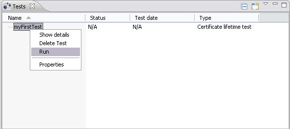
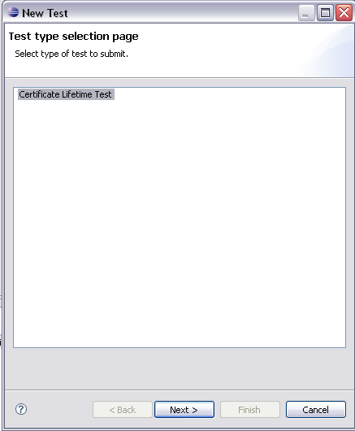
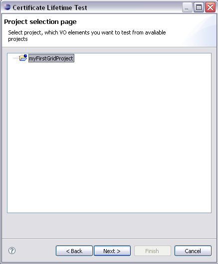
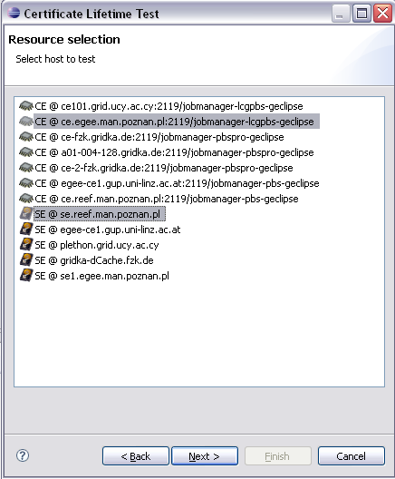
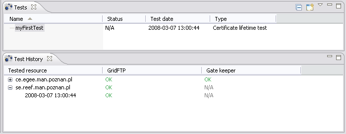
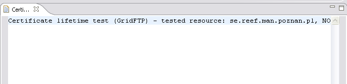
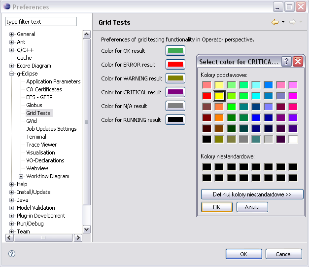

Using g-Eclipse user can control state of resources available in Virtual Organization, by performing different kinds of tests on them. In g-Eclipse those tests can be delivered by contributors, but built in in this release comes:
The main place form where all tests can be created, run and managed is Tests view (Window > Show view > Other... > g-Eclipse > Tests). All actions that can be applied to tests are available from this "cockpit" and described below.
To run a new test click "New Test Wizard" icon in upper-right corner of the Tests view. This will open a New Test Wizard for you. Wizard can be also opened in a standard way, through File > New... > Other... > g-Eclipse > Grid Test Wizard.
On the first page of the wizard you have to choose what kind of test you want to create (be aware that in case only one type of test is available this page may not be displayed). The content of wizard depends on the kind of test chosen on the first page. Different kind of tests' wizards are described below.
Another option to create a test is to select resource(-s) you want to test under Virtual Organization node in Grid Project View. Then from the context menu select "Test ...". The "New Test Wizard" will be opened. Some of the wizard pages may be omitted if you choose this way of starting a test. For example common "Project Selection Page" and "Resource Selection Page" will not be shown, because all the data can be read from the selection.
Perform this kind of test if you want to check certificates validity of services in your Virtual Organization. On the next page of wizard you will be asked to choose a grid project from your workspace (if you don't have any project, see this guide how to create one).
On the Resource Selection page you have to choose resources on which services you want to test are located. You can choose more than one resource by pressing Ctrl key.
Next page is the General Test Settings page on which you are asked to provide name for your test and choose what kind of services you would like to test for certificates validity.
Notice: to test GridFTP service you have to have CA certificates imported.

That was the last page of Certificate Lifetime Test's wizard. Press finish and your test will appear in Tests view. Now you have to run it.
Pages of the gLite Version Test wizard are similar to the Certificate Lifetime Test wizard. You will need to :

This test is a job-based test. In principle it creates proper jsdl (one for each node selected for testing) and scripts, which will be run on the grid. When user perform run action (see Running a test below) on the created test, jsdl is submitted to the selected node. Status of the job is refreshed every minute in background. When job finishes, output of the job is evaluated and status of the test is displayed to the user.
To run a test you simply choose Run from its context menu in Tests view.
Test is run as a background job. Depending on kind of test and number of tested resources it may take some time. To see progress of running your test open Eclipse's Progress view.
Each test can be run many times.
After your test was successfully run you can see its details in Tests View, Tests History View and standard Eclipse Properties view.
To open this view choose "Show details" from test's context menu in Tests view. You can also go to Window > Show wiev > Other... > g-Eclipse > Test History.
Test History view shows information about test that is selected in Tests view.
In Test History view you will see tests grouped by tested resources. Each resource may have children - one for one test run. Results for this test run are shown for each sub-test in column with this sub-test's name. Even more details can be seen when you double click single test result (the intersection of test run row and sub-test column) - an editor will open with result description.
In Test History view different test results have different colors so it is more readable for user at first sight. Those colors can be defined on Grid Tests preference page (Window > Preferences... > g-Eclipse > Grid Tests).
